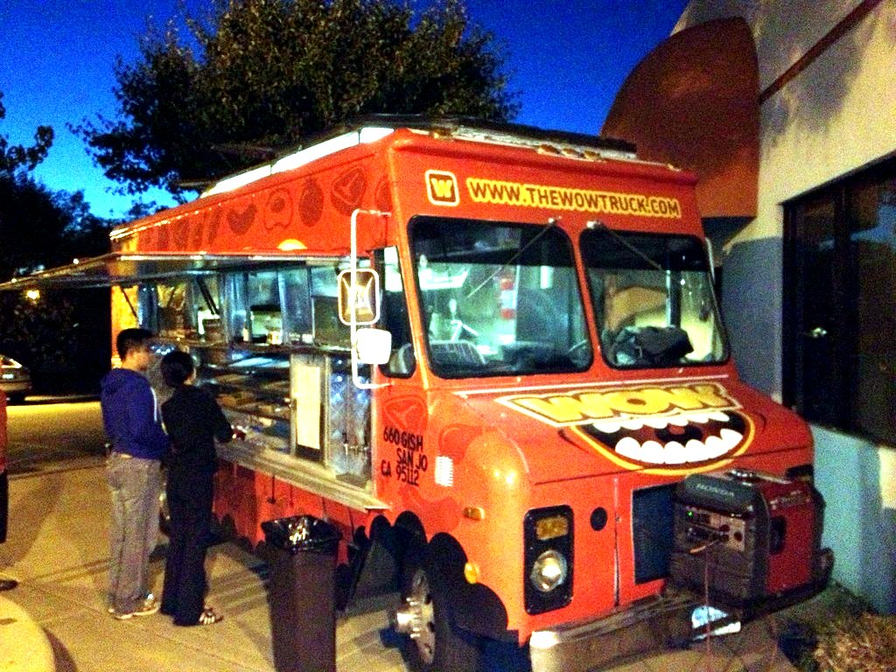

Five-star ratings
One message to the listing desk — no account, no app install. The truck's average updates the moment your review lands.

Food trucks, found in seconds
Pick a radius — a few miles, 150, or the whole country. Where We Eatin' shows every truck that is open right now, with real star ratings from real customers.
9 trucks live across Pueblo and Colorado Springs — and every one of them was added by a human, not a scraper.
How it works
Type a ZIP or a city, or just tap Use my location. Then choose how far you'll drive — in miles or kilometres.
Every active truck inside your radius, drawn on the radar with its current spot, cuisine and open/closed status.
Check the stars, read what other customers said, then head straight there. Leave a review so the next person knows.
The feature everyone asks for
Most directories only show you what is nearby. We let you decide what nearby means — one control, from a single mile to nationwide, in miles or kilometres.

Ratings, comments and one badge that matters
One message to the listing desk — no account, no app install. The truck's average updates the moment your review lands.
Tell the next customer what was good, what was slow, and what to order. One review per truck per 12 hours keeps it fair.
Earned at 3+ recommendations and a 4.5+ average — and it can be taken away if the reviews stop supporting it. It is not for sale. Ever.
See it working
The list below is the real roster — every truck on it is one we have spoken to, with the location they park at. The interactive map view runs on a private machine and is not published while our public ingress stays closed, so this page shows the same information in a form that cannot go stale or leak anything.
See who's live right now Live roster · updated from our own vendor records
No countdowns, no fake scarcity: if a truck is not open, it is not on this list.
For trucks
Listing takes minutes and costs less than one lunch service. You control your location, your hours and your photos.
$15/month
$250 one-off
Payments are processed by Stripe. We never see or store your card number.
Questions
No. The badge is computed from the reviews: at least three recommendations and a 4.5 average or better. Drop below either line and it disappears. Nothing in the product is for sale except a listing and the catering service.
Anywhere from one mile to 3,000, in miles or kilometres — or switch to Nationwide and see every active truck at once. The default is 150 miles, which covers Pueblo, Colorado Springs and the towns between them.
Because there genuinely are no active trucks inside the radius you chose. We would rather show you an empty map than invent a result. Widen the radius or switch to Nationwide.
It is used to centre the search and nothing else. If you use the Use my location button your browser coarsens the coordinates before they are sent. Reviews are rate-limited on a one-way hash of the connection — we do not store raw IP addresses.
Colorado is where the trucks are today. The radius engine itself is nationwide by design, so as listings arrive in new cities they simply show up in the results.
9 trucks tracked across Pueblo and Colorado Springs — live locations, direct vendor contact, 0% delivery markups.
Listings are the vendors' own information. Prices marked “reported” have not been confirmed by the vendor yet.